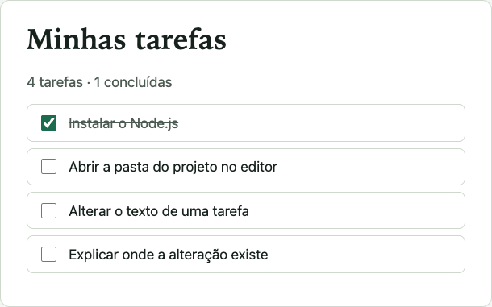

O mesmo cálculo funciona fora do navegador?
Até aqui o JavaScript rodou dentro de uma página. Hoje o mesmo arquivo roda em dois lugares: o Console do navegador e o terminal, com Node.js.
document.title?
- Escreva “sim” ou “não” para cada caso e uma razão.
- Guarde a previsão: ela volta no slide 32.
const tarefas = [
{ titulo: 'Instalar o Node.js', concluida: true },
{ titulo: 'Abrir a pasta do projeto no editor', concluida: true },
{ titulo: 'Inspecionar a página no DevTools', concluida: true },
{ titulo: 'Executar JavaScript no terminal', concluida: false },
{ titulo: 'Comparar navegador e Node', concluida: false },
]
const concluidas = tarefas.filter((tarefa) => tarefa.concluida).length
const pendentes = tarefas.length - concluidas
const percentual = Math.round((concluidas / tarefas.length) * 100)
console.log(`Total: ${tarefas.length}`)
console.log(`Concluídas: ${concluidas}`)
console.log(`Pendentes: ${pendentes}`)
console.log(`Progresso: ${percentual}%`)Contar as tarefas no Console do navegador

Estado inicial: qualquer página serve; usamos a da etapa 01. O Console abre com F12 (Cmd+Option+J no macOS).

Alteração: o conteúdo completo de tarefas.js colado no Console. O Chrome pode pedir que você digite allow pasting antes de aceitar código colado: é uma proteção contra golpes.
> (conteúdo de tarefas.js colado no Console de uma página local)
Total: 5
Concluídas: 3
Pendentes: 2
Progresso: 60%Compare: os quatro números. Aceitável: o Console também mostrar undefined depois da última linha (é o valor da expressão, não um erro).
- Tempo
- 3 min demonstração + 7 min reprodução
- Pré-requisitos
- Navegador com DevTools; arquivo
tarefas.jsaberto no editor - Resultado esperado
- Quatro linhas:
Total: 5…Progresso: 60%
- Abra uma página e o Console.
- Copie todo o conteúdo de
tarefas.jse cole no Console. - Pressione Enter e registre as quatro linhas.
Pausa: todos com Total: 5 antes de seguir.
Linguagem, engine e ambiente: três coisas diferentes
V8 não é o navegador
É a engine. O Chrome e o Node usam o V8, mas cada um acrescenta APIs próprias.
Node é um runtime
Executa JavaScript fora do navegador: scripts, ferramentas e servidores. Não é gerenciador de pacotes (esse é o npm).
Compilar e interpretar
Engines modernas combinam interpretação e compilação durante a execução (JIT). Não é “uma ou outra”.
Qual Node está instalado — e em que pasta você está?
node --version
npm --version| Terminal | Mostrar a pasta atual | Listar arquivos |
|---|---|---|
| macOS / Linux (zsh, bash) | pwd | ls |
| Windows PowerShell | pwd ou Get-Location | ls ou dir |
| Windows Prompt de Comando | cd (sem argumentos) | dir |
~/modulo-2/etapas/03-node-tarefas $ node --version && npm --version
v24.19.0
11.17.0
Aceitável: outro número v24.x (linha 24 LTS) e outro npm
11.x. Outra linha do Node: registre e avise o professor antes do bloco 5.
RegistreVersão do Node, versão do npm, nome do terminal e a pasta atual.
“Comando não encontrado”: falta o programa ou o arquivo?
| Mensagem | Quem falhou | Verificação |
|---|---|---|
zsh:1: command not found: nodee | O shell não achou o programa | Grafia; node --version |
/bin/bash: nodee: command not found | Idem, no bash | Idem |
Error: Cannot find module '…/tarefas.js' | O Node rodou; não achou o arquivo | pwd e ls/dir |
No Windows a mensagem muda de texto, não de sentido: o PowerShell diz que o termo não é reconhecido como comando; o Prompt de Comando diz que não é reconhecido como comando interno ou externo. (Não registradas aqui.)
$ command -v node && echo $PATH | tr ':' '\n' | grep -n node
~/.nvm/versions/node/v24.19.0/bin/node
4:~/.nvm/versions/node/v24.19.0/binnode (macOS, nvm) · arquivo. No Windows: where node.
Meu terminal é [zsh / bash / PowerShell / Prompt de Comando] no
[sistema operacional]. Na pasta [resultado de pwd ou cd]
digitei [comando exato] e apareceu [mensagem exata].
node --version mostra [resultado]. Antes de sugerir qualquer
instalação ou mudança no PATH, pergunte o que ainda falta saber, uma pergunta por
vez. Diga qual evidência distingue “programa não encontrado” de “arquivo não
encontrado” e qual teste eu devo fazer primeiro.
Executar tarefas.js no Node — e na pasta errada
~/modulo-2/etapas/03-node-tarefas $ node tarefas.js
Total: 5
Concluídas: 3
Pendentes: 2
Progresso: 60%Compare com o Console (slide 26): mesmos quatro números.
~/modulo-2/etapas $ node tarefas.js
node:internal/modules/cjs/loader:1520
…
Error: Cannot find module '~/modulo-2/etapas/tarefas.js'
at Module._resolveFilename (node:internal/modules/cjs/loader:1517:15)
…
code: 'MODULE_NOT_FOUND',
…
Node.js v24.19.0Leia o caminho: o Node procurou o arquivo na pasta etapas, não em 03-node-tarefas. Aceitável: números de linha diferentes em outra versão.
ExpliqueNa aba 2, quem falhou: o shell, o Node ou o seu arquivo?
- Tempo
- 3 min demonstração + 7 min reprodução
- Pré-requisitos
- Slide 28: Node 24 conferido
- Resultado esperado
- Mesma saída do Console; o erro da pasta errada explicado
- Abra o terminal na pasta
03-node-tarefase liste os arquivos. - Execute
node tarefas.js. - Suba uma pasta (
cd ..) e repita. Leia o caminho na mensagem.
Pausa: todos voltam à pasta certa e com a saída da aba 1.
Por que document não existe no Node?
console.log('Antes de acessar document')
console.log(`Título da página: ${document.title}`)
console.log('Depois de acessar document')node?
document representa a página carregada (o DOM). O
navegador o cria ao abrir uma página; o Node não abre páginas.
| Situação | Exemplo deste bloco |
|---|---|
| Impossível neste ambiente | document no Node padrão: não há página carregada |
| Pré-requisito ausente | command not found: node: falta instalar ou o PATH |
| Alternativa válida com outra configuração | DOM simulado por biblioteca (os testes da etapa 18 usam uma); require × import |
| Convenção da aula | Nomes como tarefas.js e a pasta etapas/ |
Mesma linguagem, APIs diferentes: compare as saídas
> (conteúdo de titulo-da-pagina.js colado no Console de uma página local)
Antes de acessar document
Título da página: Todo List — etapa 01
Depois de acessar documentAceitável: outro título, conforme a página aberta.
~/modulo-2/etapas/03-node-tarefas $ node titulo-da-pagina.js
Antes de acessar document
~/modulo-2/etapas/03-node-tarefas/titulo-da-pagina.js:5
console.log(`Título da página: ${document.title}`)
^
ReferenceError: document is not defined
at Object.<anonymous> (~/modulo-2/etapas/03-node-tarefas/titulo-da-pagina.js:5:34)
…
Node.js v24.19.0A 1ª linha saiu; a 3ª não: o erro interrompeu o programa na linha 5.
Console do Chrome
console → object
Math → object
document → object
window → object
process → não existe aqui
fetch → function$ node ambiente.js
console → object
Math → object
document → não existe aqui
window → não existe aqui
process → object
fetch → functionSaídas reais de ambiente.js nos dois ambientes, 21/10/2026.
- Tempo
- 10 min, individual
- Resultado esperado
- Previsão do slide 25 comparada com as saídas reais
- Execute
titulo-da-pagina.jseambiente.jsnos dois ambientes. - Marque o que confirmou e o que contrariou sua previsão.
Executei o mesmo cálculo no Console e no Node. No Console obtive [saída]; no Node obtive [saída ou erro]. Explique o que pertence à linguagem e o que pertence ao ambiente. Depois me dê duas previsões para testar. Não suponha que Node só executa servidores.
“Node só serve para backend”: a evidência concorda?
Avalie a frase “Node.js só serve para backend”. Eu executei [comando que você rodou] e obtive [saída], sem nenhum servidor. Use esse resultado como evidência: o que ele mostra sobre onde o Node roda e para que serve? Cite um uso em servidores e dois usos fora deles. Diferencie limitação técnica de convenção e indique uma fonte oficial verificável, sem inventar referências.
Sem IA: discuta em dupla com as três evidências ao lado.
Evidência 1
node tarefas.js rodou e terminou. Nenhum servidor envolvido.
Evidência 2 (bloco 4)
npm e nodemon são programas escritos para o Node.
Evidência 3 (bloco 5)
O Vite, servidor de desenvolvimento e build do Vue, roda no Node.
CommonJS e ES Modules: dois sistemas válidos
| CommonJS | ES Modules | |
|---|---|---|
| Expor | module.exports = { tarefas } | export const tarefas = … |
| Usar | const { tarefas } = require('./dados.cjs') | import { tarefas } from './dados.mjs' |
| Como o Node decide | .cjs, ou .js com "type": "commonjs" | .mjs, ou .js com "type": "module" |
| Onde aparece | Pasta de treino do bloco 4 | Projeto Vue do bloco 5 |
PerguntaEm que contexto require funciona? E import? Nenhum dos dois é “o errado”.
~/modulo-2/etapas/03-node-tarefas/modulos/commonjs $ node resumo.cjs
[CommonJS] 1 de 2 tarefas concluídas~/modulo-2/etapas/03-node-tarefas/modulos/esm $ node resumo.mjs
[ES Modules] 1 de 2 tarefas concluídas~/…/modulos/incoerente $ node resumo.cjs
(node:93382) Warning: Failed to load the ES module: ~/modulo-2/etapas/03-node-tarefas/modulos/incoerente/resumo.cjs. Make sure to set "type": "module" in the nearest package.json file or use the .mjs extension.
…
import { tarefas } from '../esm/dados.mjs'
^^^^^^
SyntaxError: Cannot use import statement outside a module
…
Node.js v24.19.0import num arquivo .cjs. Duas correções válidas: usar require ou renomear para .mjs.
Exemplo integrador: mude os dados, preveja, execute
- Tempo
- 8 min, individual, depois comparação em dupla
- Pré-requisitos
- Slide 30:
node tarefas.jsfuncionando - Resultado esperado
- Previsão escrita e saída real lado a lado
- Em
tarefas.js, marque “Comparar navegador e Node” comoconcluida: true. - Antes de executar, escreva os quatro números previstos.
- Execute
node tarefas.jse compare. - Desafio: o que acontece com
Progressose a lista ficar vazia?
{ titulo: 'Comparar navegador e Node', concluida: true },Dica 1
Só uma tarefa mudou de situação; o total não muda.
Dica 2
Para a lista vazia: quanto é 0 / 0 em JavaScript?
Mostrar solução (após a tentativa)
Total: 5, Concluídas: 4, Pendentes: 1,
Progresso: 80%. Lista vazia: 0 / 0 é NaN, e
a saída é Progresso: NaN% (verificado no Node 24.19.0). O projeto
completo trata esse caso devolvendo 0%.
Verificação individual, sem IA
- Variação
- Acrescente duas tarefas em
tarefas.js: uma concluída e uma pendente. Preveja os quatro números e execute. - Evidência
- Saída real do terminal ao lado da previsão
- Consulta
- Permitido usar o próprio registro; não usar IA
| Critério (0–2) | 2 pontos quando… |
|---|---|
| Ambiente funcional | Executa na pasta certa e confere a versão |
| Interpretação | Distingue linguagem, engine, runtime e npm |
| Diagnóstico | Explica “programa” × “arquivo” não encontrado |
| Variação | Previsão confere ou a diferença é explicada |